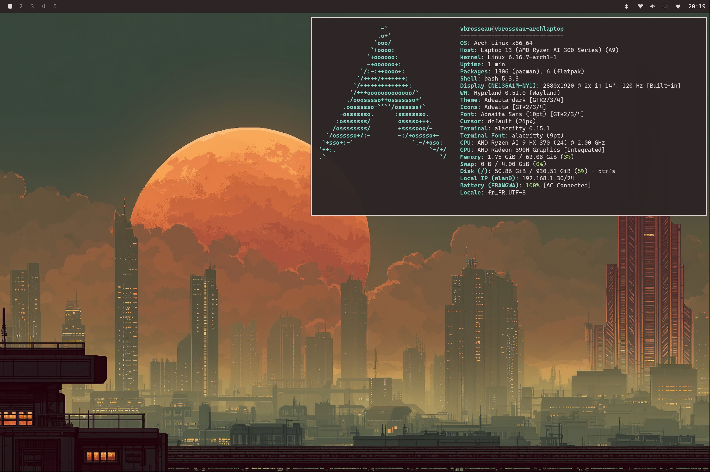

Welcome to the Dotarchy manual. This documentation provides a guide to understanding, installing, and using the Dotarchy dotfiles.

Dotarchy is a set of dotfiles and configurations to create a consistent and powerful development environment across different operating systems like Arch Linux, Fedora, and macOS.
The main goal is to have a modular and easy-to-maintain system that can be quickly set up on a new machine.
⚠️ The Hyprland setup is extracted (with some cleanup and adjustments) from the excellent Omarchy project by @dhh. Hyprland Keybindings reference
Installation #
To set up Dotarchy on your system, follow these steps:
-
Clone the Repository: Start by cloning the Dotarchy repository to your local machine using the following command:
git clone https://github.com/c4software/dotarchy.git ~/dotarchy -
Run the Setup Script: Navigate to the cloned directory and execute the setup script. This script will automatically detect your operating system and install the necessary packages and configurations.
cd ~/dotarchy ./setup.sh -
Follow On-Screen Instructions: The setup script may prompt you for additional input or confirmation during the installation process. Follow the on-screen instructions to complete the setup.
Install only specific parts #
If you want to install only specific parts of Dotarchy, such as the Hyprland setup on Arch Linux, you can navigate to the relevant directory and run the dedicated setup script. For example:
cd ~/dotarchy/
./install/hyprland/setup.sh
Only update configuration files #
To update only the configuration files without installing packages, you can run the Hyprland setup script with the --skip-packages flag:
./install/hyprland/setup.sh --skip-packages